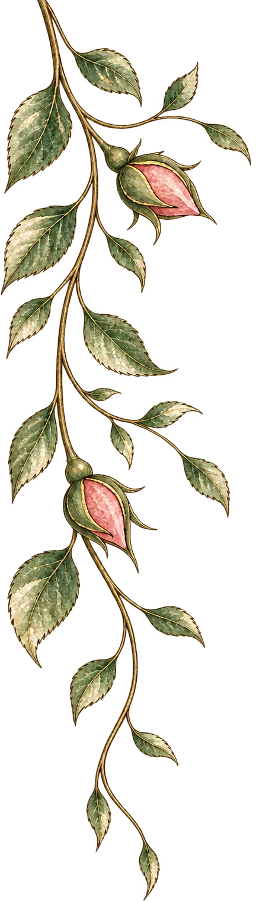
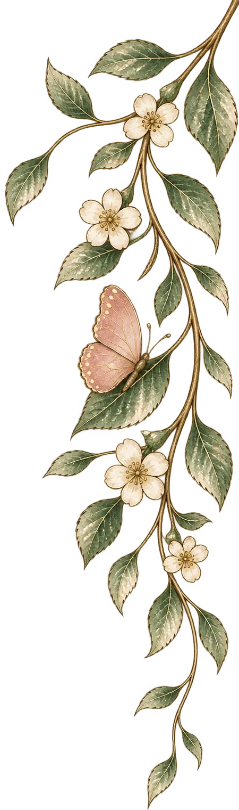
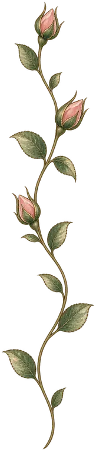
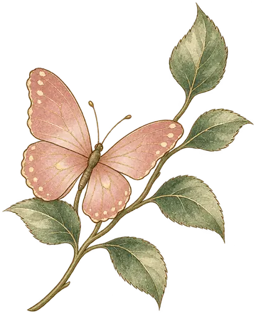
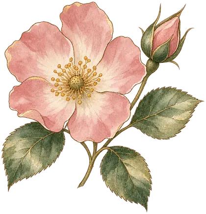
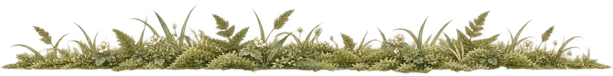
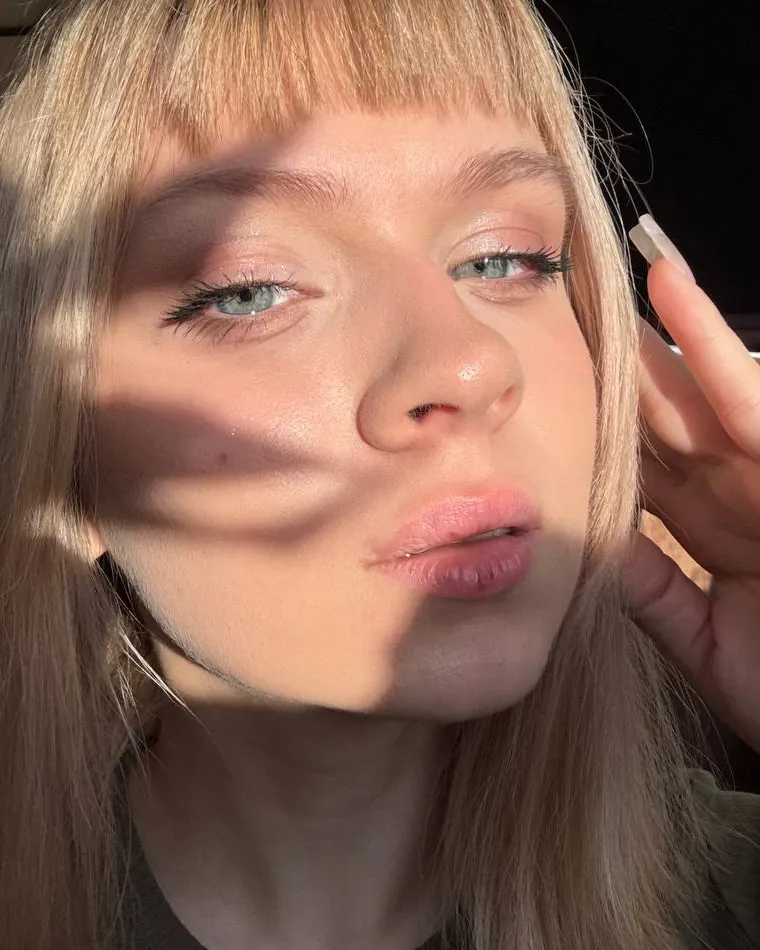
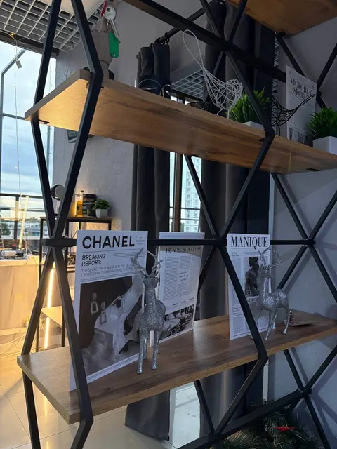

Студия в Королёве
Маникюр и педикюр в Королёве
Мастер Виктория
Маникюр с покрытием — от 2 500 ₽ · все ценыТЦ «Престиж», проспект Космонавтов, 4В · выходные — пятница и суббота




Глава IРаботы
Маникюр, наращивание, дизайн
Глава IIЦены
Маникюр
- Стандарт2 500 ₽Снятие, уходовый маникюр, укрепление гелем, покрытие цветом
- Стандарт+2 800 ₽Снятие, уходовый маникюр, укрепление гелем, ремонт до трёх ногтей, покрытие цветом
- Коррекция3 000 ₽Снятие, уходовый маникюр, укрепление гелем, ремонт до пяти ногтей (коррекция архитектуры), покрытие цветом
Наращивание — цена зависит от длины
- Мини3 500 ₽
- Стандарт4 000 ₽
- Макси4 500 ₽
- Когти5 000 ₽
Мини, Стандарт, Макси — длина ногтя. «Когти» — отдельная форма ногтя.
Что входит: подготовка ногтевой пластины, наращивание, покрытие и любой дизайн.
Дополнительно
- Лёгкий дизайн300 ₽Полосы, слайдеры, стразы, поталь
- Сложный дизайн: френч500 ₽
- Сложный дизайн: аквариум1 000 ₽
- Сложный дизайн: градиент500 ₽
- Сложный дизайн: работа по мудбордам1 000 ₽
- Сложный дизайн: рисунок от руки500 ₽
- Уходовый маникюр1 500 ₽Гигиенический маникюр без покрытия
- Снятие500 ₽Без дальнейшего покрытия
Цена дизайна — за все ногти.
Глава IIIЦены
Педикюр
- Комплекс «пальчики»1 700 ₽Только обработка пальчиков
- Комплекс «стопы»2 000 ₽Только обработка стоп
- Обработка пальчиков с покрытием2 500 ₽Обработка пальчиков и покрытие гель-лаком, без стоп
- Пальчики плюс стопы3 000 ₽Обработка стоп и пальчиков без покрытия
- Комплекс «всё включено»3 500 ₽Снятие, обработка стоп, пальчиков, покрытие
Глава IV
Обо мне

Меня зовут Виктория, имею опыт работы более 5 лет в сфере маникюра. Делаю ногти с разными дизайнами: френч, аквариум, градиент, работа по мудбордам, рисунки от руки. Приходите с любыми идеями. Работаю только на качественных материалах.
Обучение
Глава VСтудия
Как записаться
- Напишите в Telegram @torrimaart.
- Договоримся о дне и времени.
- Приходите в студию.
График
10:00–21:00
Выходные — пятница и суббота
